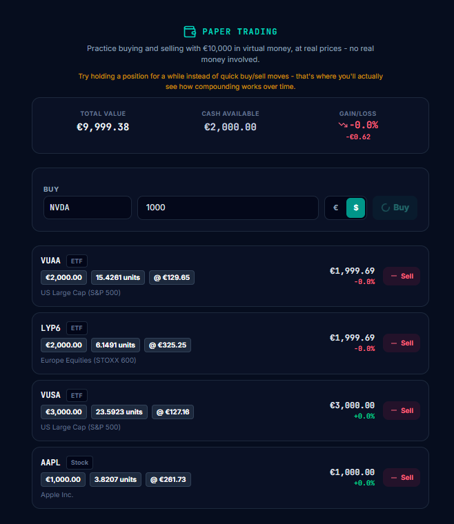
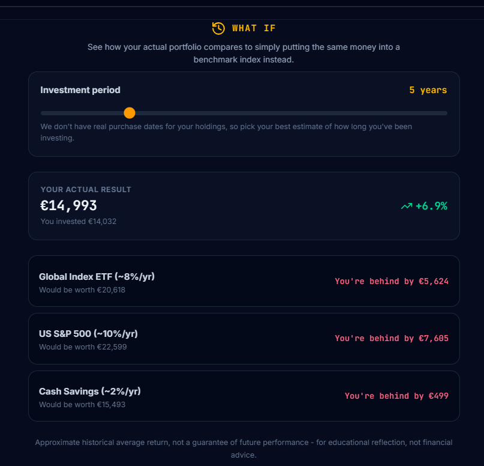

Not a feature list. A real path, step by step - what happens the day you sign up, and what happens six months later.
You sign up, and Sofia asks a few quick questions - your experience level, your goal, your time horizon, your comfort with risk. No jargon, no long questionnaire before you see any value.
Right after, a short, interactive welcome happens inside the chat itself - not a static tour. Sofia shows you the 2-3 things that matter most, in plain language, then gives you one clear first step. Not a menu of options to figure out on your own - usually, your first lesson in the Academy.
12 structured tracks, from Foundations to Advanced, each ending in a short quiz. Sofia remembers which tracks you've completed - and quietly tracks which topics you got wrong, not to judge you, but to adjust how she explains things later.
Four practice tools, all using real market data, none of it with real money on the line:

This is where practice turns into your real financial life:
Sofia speaks first when you come back (at most once a day), and picks whichever of these is actually most relevant right now:
Beyond that: My Progress (streak, level per topic), Portfolio Audit (full diversification analysis), and What-If (what would have happened if you'd invested elsewhere instead).

Every reflection point can lead back into Learn (a new lesson), Practice (a new scenario), or Apply (a new goal, a new position). It's not a straight line - it's a spiral that keeps returning and going a little deeper each time.
This isn't a chatbot that answers questions. It's a companion that remembers - without ever giving you personal investment advice. Educational, not advisory, the whole way through.
Start free, go at your own pace, and never feel like you're behind.